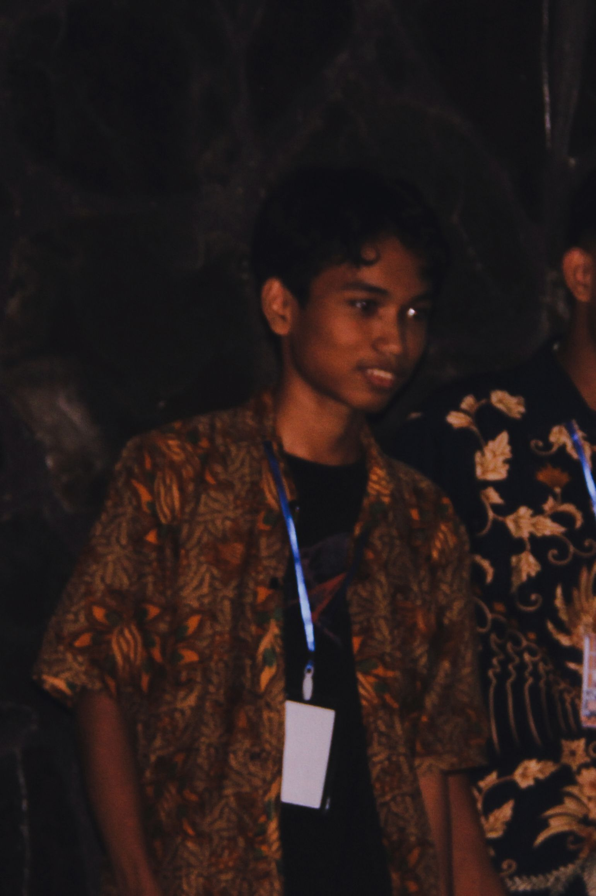

About Me
Hello! Born on August 29, 2006, I'm Bagoes Alifian Putra Setiawan, a student at Universitas Mercu Buana studying informatics engineering.
I have a strong interest in technology, particularly in software development and programming.
In the tech sector, I'm constantly keen to learn, develop, and advance.
I share my IT adventures and projects on this page, so check it out!